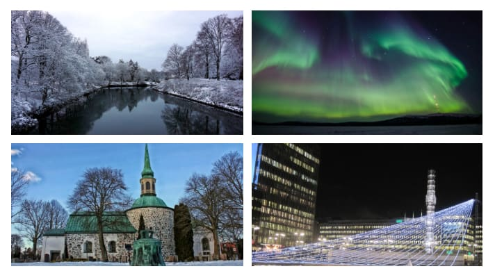

Welcome to Sweden
Sweden is a wonderful country in north-eastern Europe; they are often viewed as the most devoloped country of Skandinavia Some of its most influentials cities are: Stockholm, this is the capital, Gothenburg, and Malmö. Their main economy, mining & logging, comes from their rich mountains.
This country is genrally split up into 3 different regions, the north or Norrland, which is chock full of mountains and forrests and is less populated. The next is in the middle, Svealand, which is a large area of lowlands and some highlands. The final main region is the southern portion, Götaland, which houses the Småland highlands and in the far south the Skåne plains. There is also a region in the far North called Lappland
Types of Maps

Human Development Index (HDI)
HDI measures how developed a country is based on 3 aspects, life expectancy, education, living standard. It measures it by life expectancy at birth, expected years of education/mean years of education, and Gross national income respectively. This chart shows the development of a country because those aspects are what the world considers aspects of a developed country. It is a very good source to see what a country is like with just 3 attributes. Sweden ranks 7th on that index with a value of 0.945. It ranks just behind Germany and ahead of Austrailia. This makes sense because Sweden is genrally considered a pleasant place and is very developed.
Types of Regions
- Formal Region: Sweden as a whole would be considered a formal region because all of them speak the same language, have the same laws, etc.
- Nodal Region: Stockhom would be considered a nodal region because it is 22% of the population so the population is centered around it and as you move away from it population tends to decrease.
- Vernacular Region: Northern Europe or Scandinavia would be an example of this because while there are no real borders anymore, people still associate these countries.
Resources and Land
Enviromental Determinism: The belief that the enviroment directly affects an areas culture.
Since it is so far north, Sweden has very poor farmland and hence does little to no farming, however its many mountains allow for large amounts of mining to find all sorts of minerals like gold, copper, zinc, urainium, etc., but thats not all, they still have a lot of wood and water used for hydropower. These resources make it so that Swedens economy is more based around exporting minerals and buying crops, this means that mining is a big job in Sweden.

Enviroment and Sustainability
Swedens biggest enviromental issue happens to be due to there agriculture and urbanization, thats right its pollution. While this used to be a huge problem, Sweden has recently they have made massive strides towards clean tech, at this point, they have the lowest greenhouse gas emissions in the entirety of Europe and by 2050 hope to have a net 0 greenhouse gas emmision. The are one of the most clean countries in the world. While all this is true, Sweden still struggles with deforestationl, while they have bettered their habits, bad ones still exist and are prevalent in the industry.